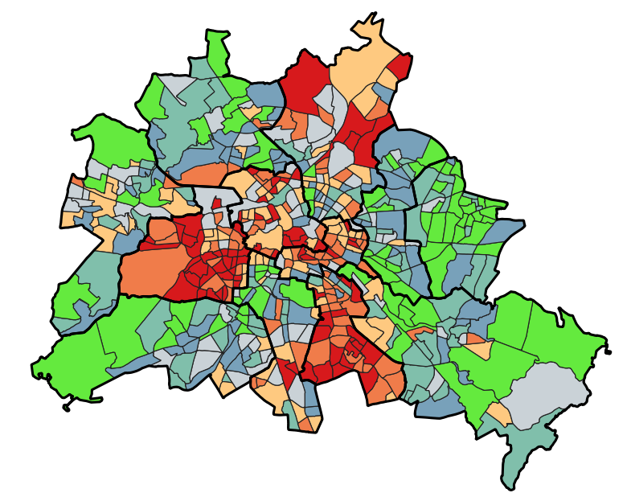
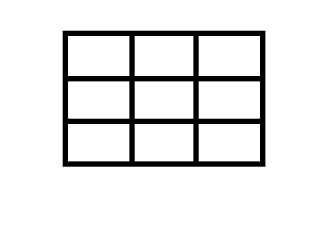

Lebensqualität in Berlin
Berlin ist mehr als nur eine Hauptstadt. Erfahren Sie hier alles über die Faktoren, die das Leben in dieser Metropole prägen – von grünen Oasen bis zur urbanen Infrastruktur.

Interaktive Karte
Theorie
Dokumentation
